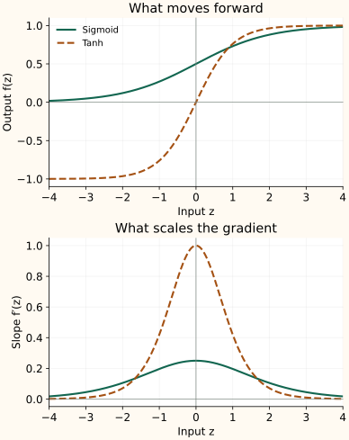

Sigmoid and Tanh: Bounded Outputs and Saturation
Sigmoid and tanh both turn an unbounded input into a bounded output. That is useful when a value must stay within a range. The tradeoff appears in the tails: large changes in the input eventually produce very small changes in the output.
Sigmoid maps a score between zero and one
$z$ is the score entering the activation. At zero, the denominator is 2, so the output is $1/2$. Positive inputs move the output toward 1; negative inputs move it toward 0. The limits are approached rather than reached for finite real inputs in exact arithmetic.
A binary classifier can interpret $\sigma(z)$ as its modeled probability of the positive class. With several independent labels, apply a sigmoid to each label's score; those probabilities need not sum to one.
Tanh includes negative outputs
Tanh ranges from −1 to 1 and passes through zero. It is odd: changing the input's sign changes the output's sign. Thus symmetric input distributions produce zero-mean outputs. It does not force arbitrary data to have zero mean.
| Function | −1 | 0 | 1 |
|---|---|---|---|
| Sigmoid | 0.2689 | 0.5000 | 0.7311 |
| Tanh | -0.7616 | 0.0000 | 0.7616 |
Tanh is a shifted and rescaled sigmoid: $\tanh(z)=2\sigma(2z)-1$. This explains their similar S shapes and different centers.
Why both functions saturate
Differentiating sigmoid gives $e^{-z}/(1+e^{-z})^2$. Rewrite the two factors using $\sigma(z)$ and $1-\sigma(z)$:
Its largest slope is $1/4$, at zero. Near either output limit, one factor approaches zero, so the derivative becomes small. For tanh, differentiation gives:
Its slope is 1 at zero and approaches zero in both tails. Saturation means this flattening of the curve. Through many hidden layers, repeated small derivative factors can weaken gradients; weights and residual connections also affect the final result.


Why sigmoid still works at a binary output
For ordinary binary cross-entropy with target $y$ and probability $p=\sigma(z)$, differentiation with respect to the logit simplifies to $\partial L/\partial z=p-y$. The loss and sigmoid derivatives combine; multiplying by an extra $p(1-p)$ afterward would be a mistake.
Use a loss that accepts logits directly, such as BCEWithLogitsLoss, to compute this combination stably. Hidden sigmoid layers still have their own sigmoid factors in backpropagation.
When these shapes fit the job
Use sigmoid when the modeled output or a retention gate must lie between zero and one. Tanh suits signed bounded state updates, as in recurrent models. For a deep hidden stack, inspect saturation before choosing either; Glorot and Bengio investigate this interaction with initialization.
ReLU and its variants take a different approach: keep the positive side open instead of bounding both tails.